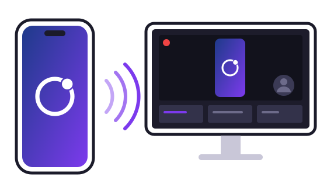

MirrorLoop
MirrorLoopLo schermo dell'iPhone sul PC, pronto per OBS.
MirrorLoop trasmette lo schermo e l'audio dell'iPhone a un PC Windows sulla rete di casa. Gratis, senza pubblicità, senza server.

Anteprima. Il programma per Windows e il plugin per OBS si possono già scaricare. L'app per iPhone non è ancora disponibile al pubblico: è in prova con TestFlight e arriverà sull'App Store.
Come funziona
-
L'iPhone trasmette
L'app cattura schermo e audio e li manda sulla rete di casa, cifrati.
-
Il PC riceve
MirrorLoop per Windows li decomprime e li mostra sincronizzati, con un ritardo minimo.
-
OBS va in onda
Aggiungi la fonte MirrorLoop alla scena e trasmetti su Twitch, YouTube o dove preferisci.
Cosa fa
-
Schermo e audio
Sincronizzati, anche con l'app in background.
-
Tre qualità
HD, Full HD a 60 fps, oppure Massima: la risoluzione esatta dello schermo dell'iPhone.
-
Abbinamento con un codice
Lo stesso codice di 6 cifre sui due schermi, solo la prima volta. Poi si ricollega da solo.
-
Cifrato e locale
Tutto resta nella rete di casa: niente server, niente account, nessun dato raccolto.
-
Una fonte per OBS
Video e audio direttamente in OBS Studio: niente "Cattura finestra".
Scarica
Windows
Windows 11 a 64 bit · versione 0.14.0 (anteprima) · 44 MB
Il ricevitore, con il plugin per OBS se lo vuoi.
Solo il plugin per OBS: file .zip · tutte le versioni
iPhone
iOS 27 o successivo.
Cosa serve
- iPhone con iOS 27 o successivo.
- PC con Windows 11 a 64 bit.
- iPhone e PC sulla stessa rete di casa, impostata in Windows come rete Privata.
- Per le dirette: OBS Studio 31.1 o successivo.
Consiglio: Wi-Fi a 5 GHz con l'iPhone vicino al router, e il PC collegato con il cavo.